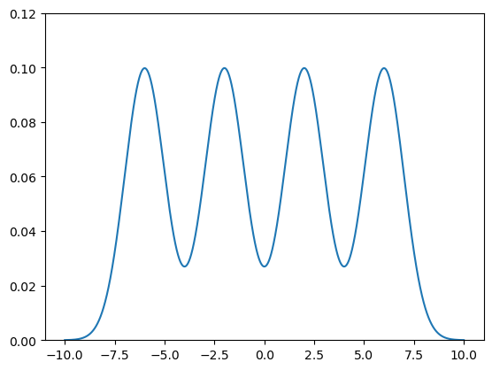
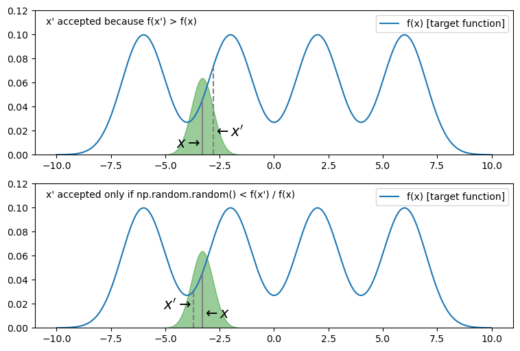
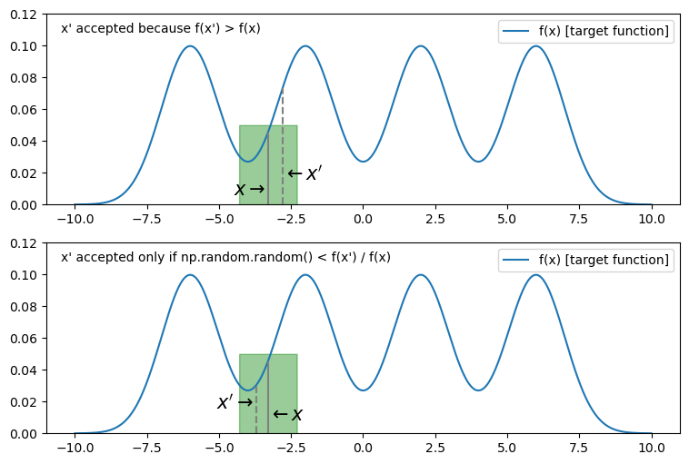

301 Markov Chain Monte Carlo#
In previous exercises, you used random numbers and the Monte Carlo rejection method to effectively do (complex) integrals that would be challenging to do analytically.
Another related application where random numbers can be used is sampling from complex (probability) distributions, using a technique called Markov Chain Monte Carlo often abbreviated MCMC.
The MCMC method can be used with many “complex” functions, including multi- or high-dimensional ones. For the purposes of this exercises we will define an example “complex” function as a sum of several offset gaussians. The functional form of a single gaussian is:
As an example target function (i.e. the one from which we want to sample), we will use 4 of these gaussians centered at \( x = \{-6,-2, 2, 6\}\) and for simplicity set the width sigima to 1. This leads to:
We have added a factor \(\frac{1}{4}\) to keep the normalization to unit area for this example exercise, though that is not necessary typically not even possible for “complex” functions of interest. Note that while we usually cannot integrate the target f(x) function, the method requires that we can evaluate it for a given x.
This example target function looks like this:

In this exercise you will implement one early MCMC method called the “Metropolis Algorithm”, essentially a random walk through the distribution as follows:
Pick some value of x as a starting point (somewhere within the distribution)
Add that x as the first point in a list of samples
Execute the following loop of steps for as many points as you wish to sample from the distribution.
Use another function (which we will describe below) called the proposal function (from which we can easily sample randomly) to pick a possible next point x’
Evaluate f(x) and f(x’):
If f(x’) > f(x), accept the new point and add x’ to the sample list. x’ is the new x for the next iteration of the loop.
Else If f(x) < f(x’) then accept the new point with probability f(x) / f(x’). (This requires generating another random number between 0 and 1.)
If accepted, add x’ to the sample list and use that as the new x for the next iteration of the loop.
If not accepted, add x again to the sample list and use x again for the next iteration of the loop.
As this algorithm is iterated samples will be generated across the domain of x and the distribution will converge to represent the distribution of the target function.
The proposal function is used in deciding what the next point x’ is given the current x. The method described above is nominally insensitive to the exact choice as long as it is symmetric, though very mismatched choices can effect the convergence to sample fully the distribution of the target function.
Some simple and intuitively natural examples include:
choosing x’ randomly with a gaussian distribution of some width around x
choosing x’ randomly with a flat distribution of some width around x
Here x’ is chosen relative to x using a gaussian proposal distribution:

And here x’ is chosen relative to x using a flat proposal distribution:

Exercise 1:
Write a function:
def mcmc(start,ntries,f,p):
# start is a starting x point
# ntries is the number of samples to produce
# f is the target function f(x), i.e. the one we are trying to sample
# p is some proposal function p(x) that is just used to randomly find a next x' given the current x
# ... implementation ...
return samples # return list of samples
Try this for the “sum of 4 gaussians” example target function above and one of the example proposal functions. Make a plot
that overlays a plot of f(x) on a histogram of the samples selected. (Hint: use density=True to normalize the histogram.)
Play with different values of start, ntries and and various proposal functions p(x) (both functional form and parameters such as sigma) to see how well the samples represent the target function.